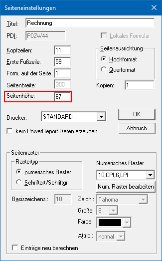
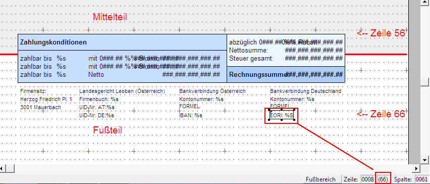
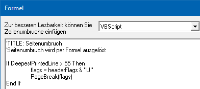
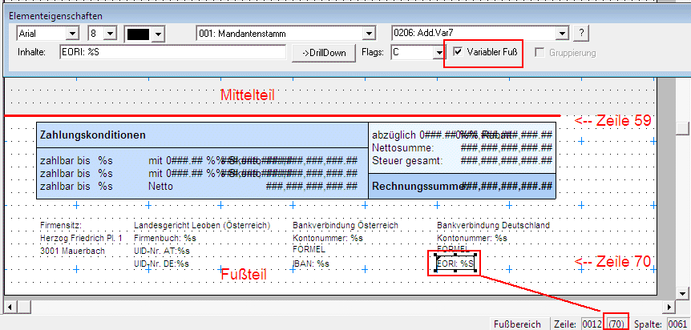
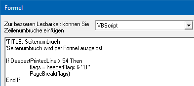

Im Fußteil auf der letzten Seite eines Beleges müssen Informationen angedruckt werden, die es nötig machen, den festgelegten Fußteil zu überschreiten.
D.h. der Fußteil wird im Formular grundsätzlich dahingehend eingerichtet, dass er den Anforderungen der vorangegangenen Seiten entspricht. Damit der Fußbereich, wenn er sich auf der letzten Seite nicht mehr auf dem Formular ausgeht, auf einer neuen Seite angedruckt wird, muss der dadurch benötigte Seitenumbruch mit einer VB Script Formel festgelegt werden.
Zur Positionierung der Elemente im Fußbereich gibt es 2 Varianten.
1. die Elemente werden negative positioniert sodass die Variablen in der letzten Zeile des Fußbereiches die max. Seitenhöhe nicht überschreiten.
2. die Elemente im Fußbereich werden mit der Option "Variabler Fußteil" versehen. D.h. der Fußteil wird immer nach der letzten Mittelteilszeile gedruckt. In diesem Fall ist es nicht notwendig die Elemente des Fußteils negativ zu positionieren.
Beispiel anhand des Fakturenformulars
Die Seiteneinstellungen im Formular sehen wie folgt aus (zu beachten ist die Seitenhöhe 67!).

ü Variante 1 - Elemente im
Fußbereich negativ platzieren
Die Variablen im Fußbereich auf der letzten
Seite müssen nun dahingehend platziert werden, dass die Seitenhöhe von 67 nicht
überschritten wird. Jedoch werden diese Platzhalter dadurch über den Bereich
"Erste Fußzeile: 59" hinausreichen (müssen).
Im folgenden Beispiel wurde
die "letzte" Zeile sogar auf Position 66 gestellt.
Dadurch ergibt sich die
erste Fußzeile auf Position 56 (negativer Bereich).


Formel zum Kopieren
If DeepestPrintedLine > 55 Then
flags = headerFlags & "U"
PageBreak(flags)
End If
Achtung
Diese Formel muss im Fußteil des Formulars als erste Variable (mit dem Flag "C") eingefügt werden!
ü Variante 2 - Elemente im
Fußbereich mit Option "Variabler Fuß"
Die Variablen im Fußbereich auf der
letzten Seite müssen mit Option "Variabler Fuß" versehen werden, müssen jedoch
dabei nicht negativ platziert werden.


Formel zum Kopieren
If DeepestPrintedLine > 54 Then
flags = headerFlags & "U"
PageBreak(flags)
End If
Achtung
Diese Formel muss im Fußteil des Formulars als erste Variable (mit dem Flag "C") eingefügt werden!
Folgende Eigenschaften stehen im Formular in einer VBScript Formel zur Verfügung:
ü CurrentLine
Objekt, das den
gerade ausgegebenen Teil repräsentiert
ü FirstMiddleLine
die erste
Mittelteilszeile auf der Seite
ü FirstFootLine
die erste
Fußzeile auf der Seite
ü CurrentPrintLine
die Zeile des
gerade gedruckten Elements
ü DeepestPrintedLine
die tiefste
bisher gedruckte Zeile
ü HeaderFlags
die Header Flags,
die aktuell definiert sind
ü MiddleFlags
die Middle Flags,
die aktuell definiert sind
ü Value (View, Var)
Zugriff auf
die Programmvariablen
ü PageBreak (FlagsForFooter
(optional));
Seitenumbruch auslösen
In der Formel wird nun auf die " DeepestPrintedLine " geprüft und falls diese über den angegebenen Wert hinausreicht, werden die "Header Flags" um das Flag für den Übertrag erweitert (das Flag "letzte Seite" wird vom Programm automatisch entfernt) und damit der Seitenumbruch ausgelöst. Würde das Übertrags-Flag nicht angegeben werden, würde überhaupt kein Fuß ausgegeben (lt. Definition des Formulars).
Im aktuellen Beispiel hätte auch die Zeile "PageBreak ("U")" genügt, weil dieses Flag den Fuß mit dem Übertrag andruckt.